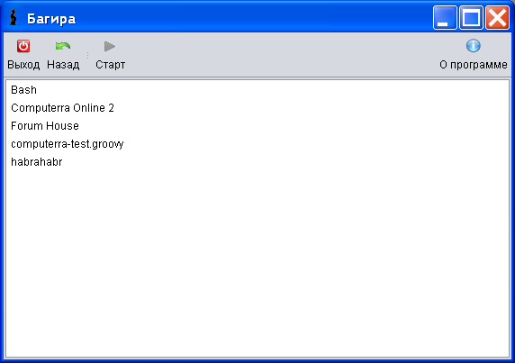
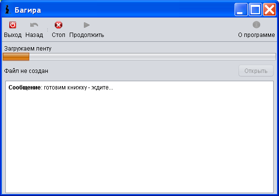
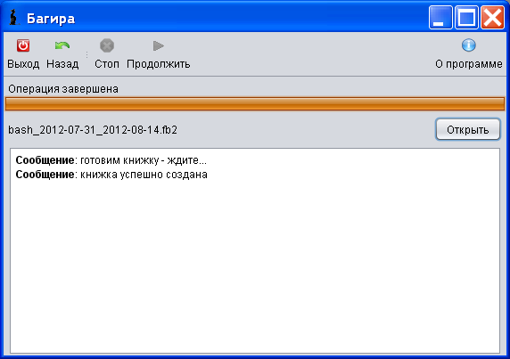

Ну, меньше слов - больше дела! В этом разделе мы создадим скрипт для генерации FB2-книжки из RSS-ленты сайта bash.im .
Итак, откройте Ваш любимый текстовый редактор. В редакторе введите следующий код
//@ description Bash
showMessage 'готовим книжку - ждите...'
rss('http://bash.org.ru/rss/', 'http://s.bash.org.ru/logo.gif')
showMessage 'книжка успешно создана'
Сохраните этот код в файл bash.groovy в директории ${bagheera_dir}/user-scripts, где ${bagheera_dir} - директория, куда Вы распаковали архив с программой. Вы должны сохранить файл в кодировке UTF-8. Если Вы не знаете/не хотите этого делать, используйте только латиницу скриптах - и можете сохранять в любй кодировке. Например, в приведенном выше скрипте пришлось бы убрать строки, начинающиеся с showMessage, либо написать фразы в этих сообщениях на латинице. В Notepad++ нужно выбрать Edit->Encode as UTF-8 without BOM.
//@ description BashЭто краткое описание Вашего скрипта. Оно должно начинаться с "//@ description". Далее идет пробел, а потом описание скрипта (в данном случае "Bash") в одну строку, в котором могут быть любые символы(кроме, соответственно, символа новой строки). Эта строка опциональна - если ее не будет, то описанием скрипта считается имя файла.
showMessage 'готовим книжку - ждите...'В результате отработки этой строки в интерфейсе отобразится сообщение "готовим книжку - ждите...". В принципе, эта строка опциональна, Вы можете удалить ее из кода - на функциональности это не скажется.
rss('http://bash.org.ru/rss/', 'http://s.bash.org.ru/logo.gif')
Она запускает генератор книжки из RSS-ленты. Первый аргумент
"http://bash.org.ru/rss/" - это адрес RSS-ленты. Второй аргумент
"http://s.bash.org.ru/logo.gif" - это URL обложки книжки.
Этот
аргумент опционален, т.е., эту строку можно заменить на
rss('http://bash.org.ru/rss/')


Стоит обратить внимание на кнопки "Стоп" и "Назад". Если нажать на "Стоп", то процесс создания книжки прервется. Если нажать на "Назад", то процесс также прервертся, и кроме того, Вы возвратитесь на страницу со списком доступных скриптов.
